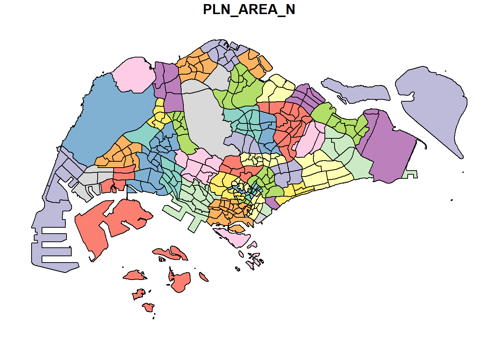
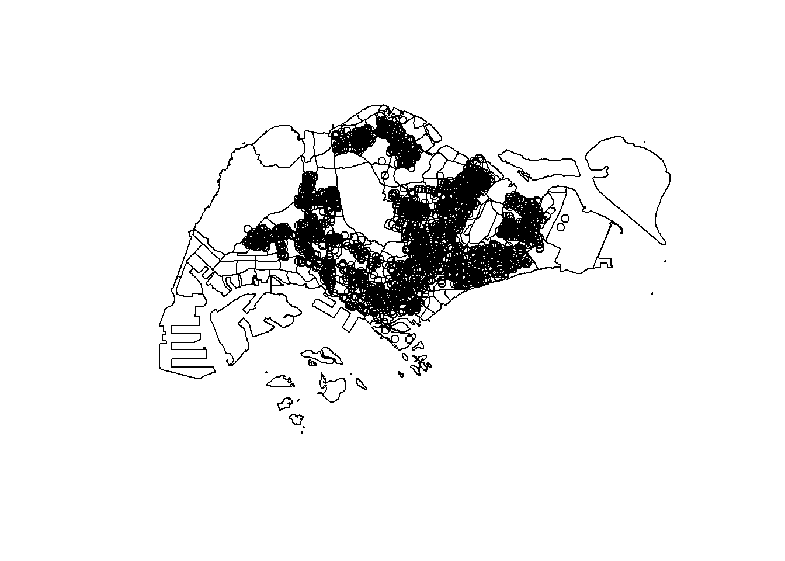

pacman::p_load(sf, tidyverse)Hands on Exercise 1
Getting Started
Install and launching of R packages
The code chunk below uses p_load() of pacman package to check if tidyverse packages are installed in the computer.If they are, then they will be launched into R.
Importing Geospatial Data
Importing polygon feature data in shapefile format
The code chunk below uses st_read() function of sf package to import MP14_SUBZONE_WEB_PL shapefile into R as a polygon feature data frame.
# Option 1: dsn = folder + layer
mpsz <- sf::st_read(
dsn = "Data/geospatial",
layer = "MP14_SUBZONE_WEB_PL"
)Reading layer `MP14_SUBZONE_WEB_PL' from data source
`C:\Users\kchan\Desktop\chandru-ko\ISSS608-VAA\Hands-on_Ex\Hands_on_Ex01\Data\geospatial'
using driver `ESRI Shapefile'
Simple feature collection with 323 features and 15 fields
Geometry type: MULTIPOLYGON
Dimension: XY
Bounding box: xmin: 2667.538 ymin: 15748.72 xmax: 56396.44 ymax: 50256.33
Projected CRS: SVY21Importing polyline feature data in shapefile form
The code chunk below uses st_read() function of sf package to import CyclingPath shapefile into R as line feature data frame.
cyclingpath <- sf::st_read(
dsn = "Data/geospatial",
layer = "CyclingPathGazette"
)Reading layer `CyclingPathGazette' from data source
`C:\Users\kchan\Desktop\chandru-ko\ISSS608-VAA\Hands-on_Ex\Hands_on_Ex01\Data\geospatial'
using driver `ESRI Shapefile'
Simple feature collection with 4651 features and 19 fields
Geometry type: MULTILINESTRING
Dimension: XY
Bounding box: xmin: 11721.1 ymin: 27550.13 xmax: 42809.37 ymax: 49702.59
Projected CRS: SVY21Importing GIS data in kml format
The PreSchoolsLocation is in kml format. The code chunk below will be used to import the kml into R.
preschool <- sf::st_read("Data/geospatial/PreSchoolsLocation.kml")Reading layer `PRESCHOOLS_LOCATION' from data source
`C:\Users\kchan\Desktop\chandru-ko\ISSS608-VAA\Hands-on_Ex\Hands_on_Ex01\Data\geospatial\PreSchoolsLocation.kml'
using driver `KML'
Simple feature collection with 2290 features and 2 fields
Geometry type: POINT
Dimension: XYZ
Bounding box: xmin: 103.6878 ymin: 1.247759 xmax: 103.9897 ymax: 1.462134
z_range: zmin: 0 zmax: 0
Geodetic CRS: WGS 84Checking the Content of A Simple Feature Data Frame
Working with st_geometry()
st_geometry(mpsz)Geometry set for 323 features
Geometry type: MULTIPOLYGON
Dimension: XY
Bounding box: xmin: 2667.538 ymin: 15748.72 xmax: 56396.44 ymax: 50256.33
Projected CRS: SVY21
First 5 geometries:MULTIPOLYGON (((31495.56 30140.01, 31980.96 296...MULTIPOLYGON (((29092.28 30021.89, 29119.64 300...MULTIPOLYGON (((29932.33 29879.12, 29947.32 298...MULTIPOLYGON (((27131.28 30059.73, 27088.33 297...MULTIPOLYGON (((26451.03 30396.46, 26440.47 303...Working with glimpse()
glimpse(mpsz)Rows: 323
Columns: 16
$ OBJECTID <int> 1, 2, 3, 4, 5, 6, 7, 8, 9, 10, 11, 12, 13, 14, 15, 16, 17, …
$ SUBZONE_NO <int> 1, 1, 3, 8, 3, 7, 9, 2, 13, 7, 12, 6, 1, 5, 1, 1, 3, 2, 2, …
$ SUBZONE_N <chr> "MARINA SOUTH", "PEARL'S HILL", "BOAT QUAY", "HENDERSON HIL…
$ SUBZONE_C <chr> "MSSZ01", "OTSZ01", "SRSZ03", "BMSZ08", "BMSZ03", "BMSZ07",…
$ CA_IND <chr> "Y", "Y", "Y", "N", "N", "N", "N", "Y", "N", "N", "N", "N",…
$ PLN_AREA_N <chr> "MARINA SOUTH", "OUTRAM", "SINGAPORE RIVER", "BUKIT MERAH",…
$ PLN_AREA_C <chr> "MS", "OT", "SR", "BM", "BM", "BM", "BM", "SR", "QT", "QT",…
$ REGION_N <chr> "CENTRAL REGION", "CENTRAL REGION", "CENTRAL REGION", "CENT…
$ REGION_C <chr> "CR", "CR", "CR", "CR", "CR", "CR", "CR", "CR", "CR", "CR",…
$ INC_CRC <chr> "5ED7EB253F99252E", "8C7149B9EB32EEFC", "C35FEFF02B13E0E5",…
$ FMEL_UPD_D <date> 2014-12-05, 2014-12-05, 2014-12-05, 2014-12-05, 2014-12-05…
$ X_ADDR <dbl> 31595.84, 28679.06, 29654.96, 26782.83, 26201.96, 25358.82,…
$ Y_ADDR <dbl> 29220.19, 29782.05, 29974.66, 29933.77, 30005.70, 29991.38,…
$ SHAPE_Leng <dbl> 5267.381, 3506.107, 1740.926, 3313.625, 2825.594, 4428.913,…
$ SHAPE_Area <dbl> 1630379.27, 559816.25, 160807.50, 595428.89, 387429.44, 103…
$ geometry <MULTIPOLYGON [m]> MULTIPOLYGON (((31495.56 30..., MULTIPOLYGON (…Working with head()
head(mpsz, n=5) Simple feature collection with 5 features and 15 fields
Geometry type: MULTIPOLYGON
Dimension: XY
Bounding box: xmin: 25867.68 ymin: 28369.47 xmax: 32362.39 ymax: 30435.54
Projected CRS: SVY21
OBJECTID SUBZONE_NO SUBZONE_N SUBZONE_C CA_IND PLN_AREA_N
1 1 1 MARINA SOUTH MSSZ01 Y MARINA SOUTH
2 2 1 PEARL'S HILL OTSZ01 Y OUTRAM
3 3 3 BOAT QUAY SRSZ03 Y SINGAPORE RIVER
4 4 8 HENDERSON HILL BMSZ08 N BUKIT MERAH
5 5 3 REDHILL BMSZ03 N BUKIT MERAH
PLN_AREA_C REGION_N REGION_C INC_CRC FMEL_UPD_D X_ADDR
1 MS CENTRAL REGION CR 5ED7EB253F99252E 2014-12-05 31595.84
2 OT CENTRAL REGION CR 8C7149B9EB32EEFC 2014-12-05 28679.06
3 SR CENTRAL REGION CR C35FEFF02B13E0E5 2014-12-05 29654.96
4 BM CENTRAL REGION CR 3775D82C5DDBEFBD 2014-12-05 26782.83
5 BM CENTRAL REGION CR 85D9ABEF0A40678F 2014-12-05 26201.96
Y_ADDR SHAPE_Leng SHAPE_Area geometry
1 29220.19 5267.381 1630379.3 MULTIPOLYGON (((31495.56 30...
2 29782.05 3506.107 559816.2 MULTIPOLYGON (((29092.28 30...
3 29974.66 1740.926 160807.5 MULTIPOLYGON (((29932.33 29...
4 29933.77 3313.625 595428.9 MULTIPOLYGON (((27131.28 30...
5 30005.70 2825.594 387429.4 MULTIPOLYGON (((26451.03 30...Plotting the Geospatial Data
In geospatial data science, by looking at the feature information is not enough. We are also interested to visualise the geospatial features. This is the time you will find plot() of R Graphic comes in very handy as shown in the code chunk below
plot(mpsz)Warning: plotting the first 9 out of 15 attributes; use max.plot = 15 to plot
all
The default plot of an sf object is a multi-plot of all attributes, up to a reasonable maximum as shown above. We can, however, choose to plot only the geometry by using the code chunk below.
plot(st_geometry(mpsz))
Alternatively, we can also choose the plot the sf object by using a specific attribute as shown in the code chunk below.
plot(mpsz["PLN_AREA_N"])
Now, let us plot the preschool layer ontop of the mpsz layer by using the code chunk below.
plot(st_geometry(mpsz))
plot(st_geometry(preschool),
add = TRUE)
Working with Projection
Assigning EPSG code to a simple feature data frame
One of the common issue that can happen during importing geospatial data into R is that the coordinate system of the source data was either missing (such as due to missing .proj for ESRI shapefile) or wrongly assigned during the importing process.
This is an example the coordinate system of mpsz simple feature data frame by using st_crs() of sf package as shown in the code chunk below.
st_crs(mpsz)Coordinate Reference System:
User input: SVY21
wkt:
PROJCRS["SVY21",
BASEGEOGCRS["SVY21[WGS84]",
DATUM["World Geodetic System 1984",
ELLIPSOID["WGS 84",6378137,298.257223563,
LENGTHUNIT["metre",1]],
ID["EPSG",6326]],
PRIMEM["Greenwich",0,
ANGLEUNIT["Degree",0.0174532925199433]]],
CONVERSION["unnamed",
METHOD["Transverse Mercator",
ID["EPSG",9807]],
PARAMETER["Latitude of natural origin",1.36666666666667,
ANGLEUNIT["Degree",0.0174532925199433],
ID["EPSG",8801]],
PARAMETER["Longitude of natural origin",103.833333333333,
ANGLEUNIT["Degree",0.0174532925199433],
ID["EPSG",8802]],
PARAMETER["Scale factor at natural origin",1,
SCALEUNIT["unity",1],
ID["EPSG",8805]],
PARAMETER["False easting",28001.642,
LENGTHUNIT["metre",1],
ID["EPSG",8806]],
PARAMETER["False northing",38744.572,
LENGTHUNIT["metre",1],
ID["EPSG",8807]]],
CS[Cartesian,2],
AXIS["(E)",east,
ORDER[1],
LENGTHUNIT["metre",1,
ID["EPSG",9001]]],
AXIS["(N)",north,
ORDER[2],
LENGTHUNIT["metre",1,
ID["EPSG",9001]]]]Although mpsz data frame is projected in svy21 but when we read until the end of the print, it indicates that the EPSG is 9001. This is a wrong EPSG code because the correct EPSG code for svy21 should be 3414.
In order to assign the correct EPSG code to mpsz data frame, st_set_crs() of sf package is used as shown in the code chunk below.
mpsz <- st_set_crs(mpsz, 3414)Warning: st_crs<- : replacing crs does not reproject data; use st_transform for
thatNow, let us check the CSR again by using the code chunk below.
st_crs(mpsz)Coordinate Reference System:
User input: EPSG:3414
wkt:
PROJCRS["SVY21 / Singapore TM",
BASEGEOGCRS["SVY21",
DATUM["SVY21",
ELLIPSOID["WGS 84",6378137,298.257223563,
LENGTHUNIT["metre",1]]],
PRIMEM["Greenwich",0,
ANGLEUNIT["degree",0.0174532925199433]],
ID["EPSG",4757]],
CONVERSION["Singapore Transverse Mercator",
METHOD["Transverse Mercator",
ID["EPSG",9807]],
PARAMETER["Latitude of natural origin",1.36666666666667,
ANGLEUNIT["degree",0.0174532925199433],
ID["EPSG",8801]],
PARAMETER["Longitude of natural origin",103.833333333333,
ANGLEUNIT["degree",0.0174532925199433],
ID["EPSG",8802]],
PARAMETER["Scale factor at natural origin",1,
SCALEUNIT["unity",1],
ID["EPSG",8805]],
PARAMETER["False easting",28001.642,
LENGTHUNIT["metre",1],
ID["EPSG",8806]],
PARAMETER["False northing",38744.572,
LENGTHUNIT["metre",1],
ID["EPSG",8807]]],
CS[Cartesian,2],
AXIS["northing (N)",north,
ORDER[1],
LENGTHUNIT["metre",1]],
AXIS["easting (E)",east,
ORDER[2],
LENGTHUNIT["metre",1]],
USAGE[
SCOPE["Cadastre, engineering survey, topographic mapping."],
AREA["Singapore - onshore and offshore."],
BBOX[1.13,103.59,1.47,104.07]],
ID["EPSG",3414]]Notice that the EPSG code is 3414 now.
Transforming the projection of preschool from wgs84 to svy21.
In geospatial analytics, it is very common for us to transform the original data from geographic coordinate system to projected coordinate system. This is because geographic coordinate system is not appropriate if the analysis need to use distance or/and area measurements.
This is a scenario that st_set_crs() is not appropriate and st_transform() of sf package should be used. This is because we need to reproject preschool from one coordinate system to another coordinate system mathemetically.
Let us perform the projection transformation by using the code chunk below.
preschool <- st_transform(preschool,
crs = 3414)Notice that it is in svy21 projected coordinate system now. Furthermore, if you refer to Bounding box:, the values are greater than 0-360 range of decimal degree commonly used by most of the geographic coordinate systems.
Now, let us try to plot the preschool layer ontop of mpsz layer again by using the similar code chunk you used earlier.
plot(st_geometry(mpsz))
plot(st_geometry(preschool), add = TRUE)
Notice that the composite map display like what we want now.
Importing and Converting An Aspatial Data
Since listings data set is in csv file format, we will use read_csv() of readr package to import listing.csv as shown the code chunk below. The output R object is called listings and it is a tibble data frame.
listings <- readr::read_csv("Data/aspatial/listings.csv")Rows: 3659 Columns: 18
── Column specification ────────────────────────────────────────────────────────
Delimiter: ","
chr (6): name, host_name, neighbourhood_group, neighbourhood, room_type, l...
dbl (11): id, host_id, latitude, longitude, price, minimum_nights, number_o...
date (1): last_review
ℹ Use `spec()` to retrieve the full column specification for this data.
ℹ Specify the column types or set `show_col_types = FALSE` to quiet this message.After importing the data file into R, it is important for us to examine if the data file has been imported correctly.
The code chunk below shows list() of Base R instead of glimpse() is used to do the job.
list(listings) [[1]]
# A tibble: 3,659 × 18
id name host_id host_name neighbourhood_group neighbourhood latitude
<dbl> <chr> <dbl> <chr> <chr> <chr> <dbl>
1 71609 Ensuite … 367042 Belinda East Region Tampines 1.35
2 71896 B&B Roo… 367042 Belinda East Region Tampines 1.35
3 71903 Room 2-n… 367042 Belinda East Region Tampines 1.35
4 275343 10min wa… 1439258 Kay Central Region Bukit Merah 1.29
5 275344 15 mins … 1439258 Kay Central Region Bukit Merah 1.29
6 294281 5 mins w… 1521514 Elizabeth Central Region Newton 1.31
7 324945 Comforta… 1439258 Kay Central Region Bukit Merah 1.29
8 330095 Relaxing… 1439258 Kay Central Region Bukit Merah 1.29
9 344803 Budget s… 367042 Belinda East Region Tampines 1.35
10 369141 5mins fr… 1521514 Elizabeth Central Region Newton 1.31
# ℹ 3,649 more rows
# ℹ 11 more variables: longitude <dbl>, room_type <chr>, price <dbl>,
# minimum_nights <dbl>, number_of_reviews <dbl>, last_review <date>,
# reviews_per_month <dbl>, calculated_host_listings_count <dbl>,
# availability_365 <dbl>, number_of_reviews_ltm <dbl>, license <chr>